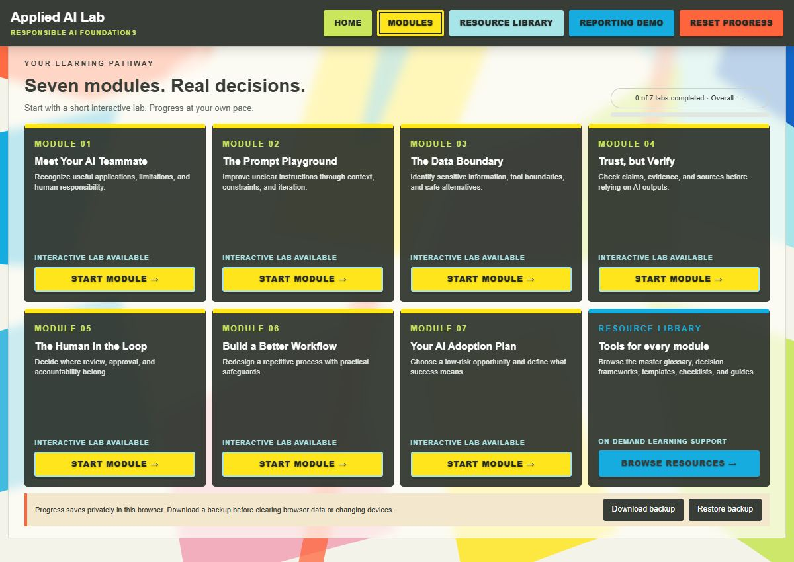
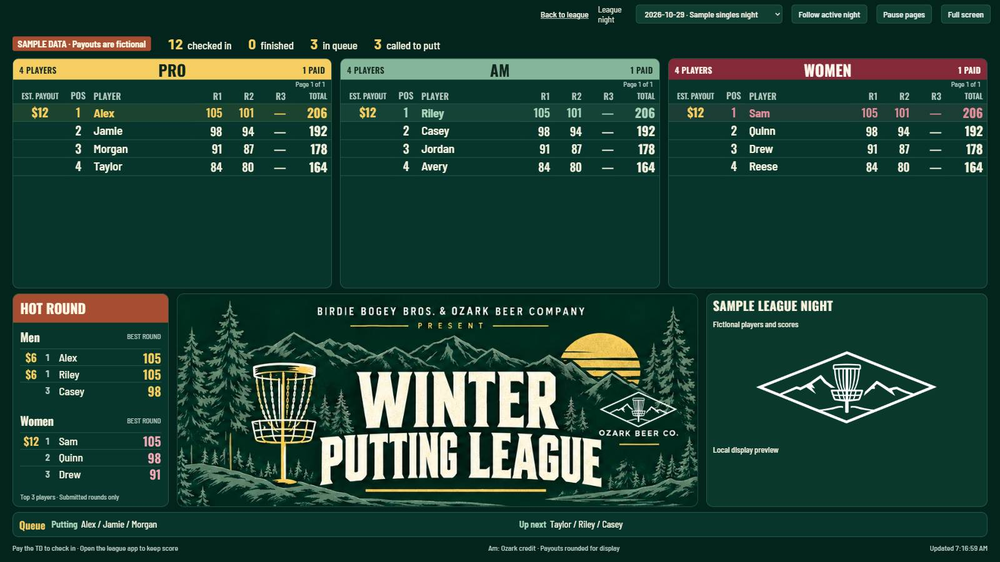

Program operations · Education · Digital tools
Building useful tools.
Improving how work gets done.
My background spans education, coaching, nonprofit leadership, national event outreach, and AI evaluation. I coordinate people and projects, document processes, and build tools that make the work easier to carry out. These projects show how I turn a practical need into something people can use.
Selected Projects
Two independent projects, from planning through testing.

A browser-based learning project with seven AI lessons and eight workplace practice scenarios. Learners examine evidence, test workflows, and explain their decisions.
Skills demonstratedLearning design, documentation, evaluation criteria, and usability testing.

An app for check-in, score entry, and standings across three putting games. The public showcase includes actual app screens and a guide to the rules.
Skills demonstratedWorkflow design, rules implementation, score review, and interface testing.
Professional Experience & Leadership
Experience organizing programs, supporting people, and keeping recurring work on track—in schools, a nonprofit, a national event network, and AI evaluation.
Senior Domain Expert
Mercor Intelligence
2025–present · Remote
Evaluate AI outputs using structured criteria and rubric-based review. Identify recurring errors, ambiguous instructions, and gaps in task requirements.
Education & Program Coordination
Springdale School District
2012–June 2026 · Springdale, Arkansas
Coordinated timelines, responsibilities, and communication across campuses. Developed process documentation and administrative automation, alongside instruction and academic support.
Coaching & Athletics Operations
Springdale School District
2012–June 2026
Planned training and assessments, coordinated events and schedules, and organized communication for athletes and stakeholders.
Outreach Director
National Amateur Disc Golf Tour
2022–2023 · Remote
Supported a distributed event network through organizer and partner coordination, participant communication, operational documentation, and issue resolution.
Executive Director
Kids Disc Golf
Through 2024
Led nonprofit program operations, outreach, stakeholder engagement, and organizational initiatives supporting youth disc golf.
Education: Master of Arts in Teaching, University of Arkansas at Monticello · BA in Philosophy and Classical Studies, University of Arkansas, cum laude.
Read the resume (PDF) →
Skills & Tools
Project Coordination
Timelines, task ownership, stakeholder communication, and event coordination. Practiced across school programs and national event operations.
Operations & Process Support
Repeatable workflows, handoffs, administrative automation, and exception handling.
See the league workflow →
Documentation & Reporting
Process documentation, standard operating procedures, status tracking, and practical reference guides. Microsoft Office and Google Workspace.
Digital Tools & Evaluation
Browser-based tools, Google Apps Script, workflow testing, and rubric-based AI output review.
See the Lab’s evaluation approach →
Education & Program Design
Instruction, coaching, scenario design, assessment criteria, and academic support. Applied in the classroom and the Lab.